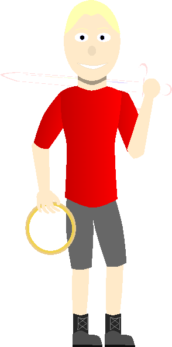
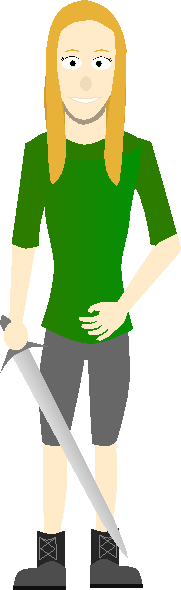
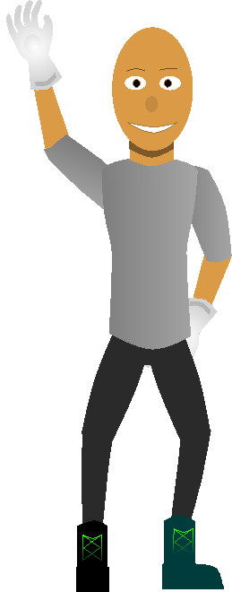
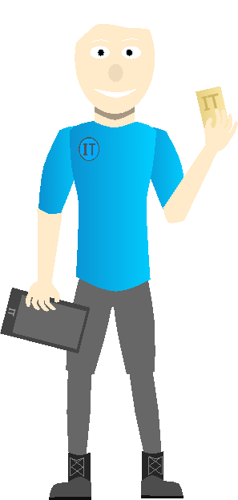

Mystical Legends is created by Whiteout12 (Kenneth "Kenny" Calhoun). It was first developed from a small childhood idea to a school project to what it is now.
Take a journey to an island of wonders thought to be impossible by humans. See the life and the world which the mystical beings (a species comprised of elves, goblins, satyrs, naiads, etc...) created. Read amazing stories of various witnesses of the changes of the island, the battles against evil, and the protection of the secrecy. Watch episodes (and shorts) based on the books and the characters. Play the games based off of the books and see the world for yourself.
|
|
|

Avery Marcus ObtainiaSkills: Math and Latin Expert, Magic, Water, LightCharacter of the present era. The main character in the Mystical Legends series. He is the son of the last Angelor and the first to unite a team of mystical beings who can defeat the uprising evil that roams about. He loves learning and wants to find out what his true potential is, including others. |
|

Rivera (River) Isabella GrantiaSkills: Water, Swimming, Fighting with KnivesCharacter of the present era. The close compainion of Avery Obtainia. She is a Naiad who first found Avery and taught him all the secrets about the mystical beings. She is not the best fighter there is, but she can work well with melee weapons. |
|

Teddric TechSkills: Engineering, Blacksmithing, Metal, Technician, Geek, LogicianCharacter of the present era. The close compainion of Avery Obtainia. She is a Naiad who first found Avery and taught him all the secrets about the mystical beings. She is not the best fighter there is, but she can work well with melee weapons. |
|

Caleb IcelanderSkills: Genius, IT Specialist, Technology Nerd and Maker, Planner and Organizer, Ice Powers and Portal AbilitiesCharacter of the present era. The close compainion of Avery Obtainia. She is a Naiad who first found Avery and taught him all the secrets about the mystical beings. She is not the best fighter there is, but she can work well with melee weapons. |